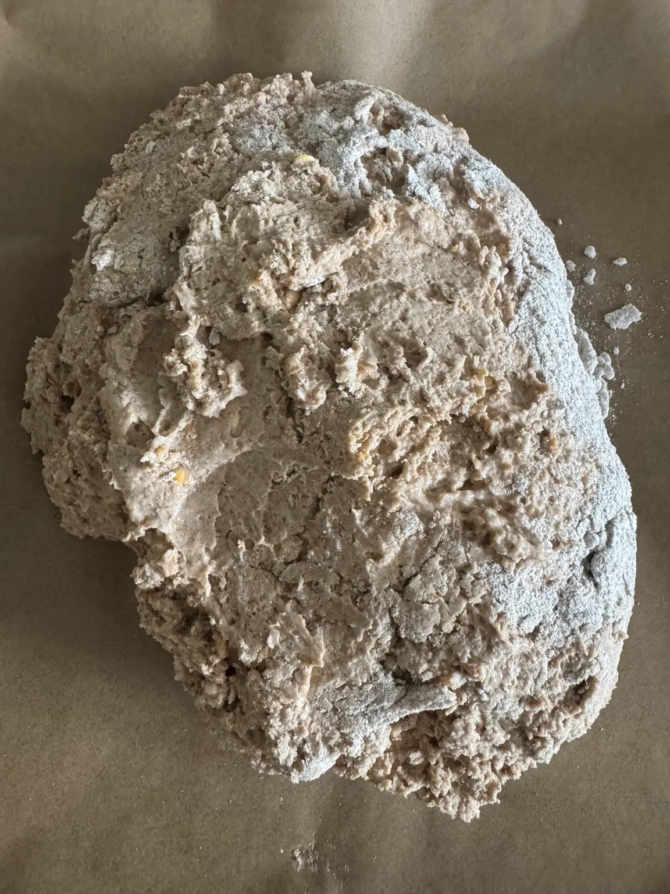
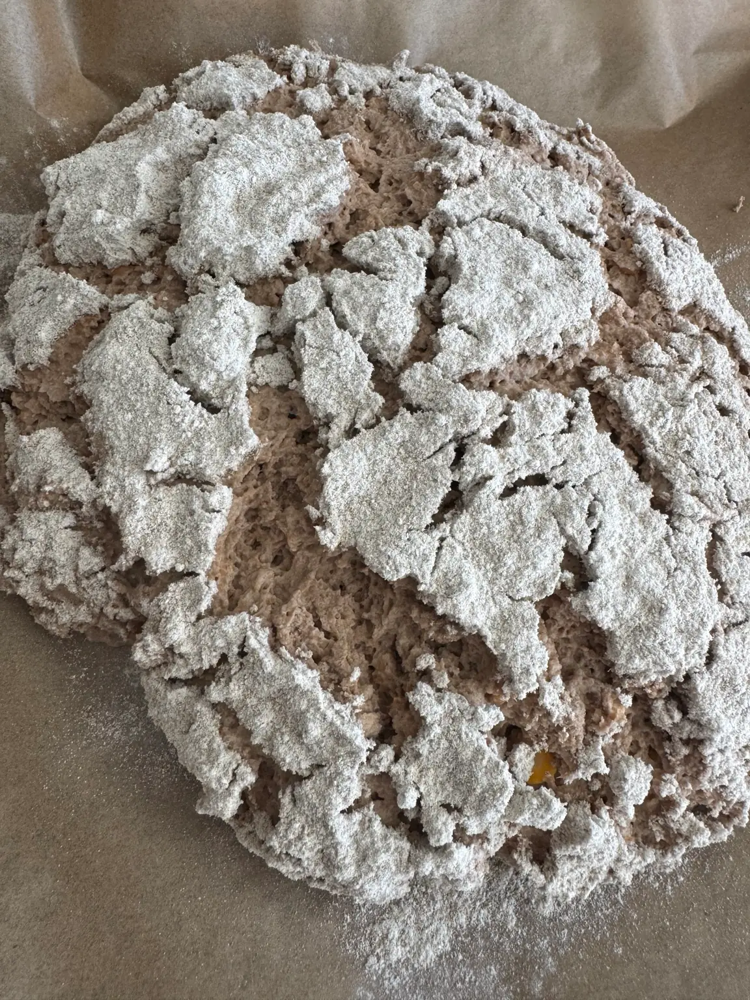
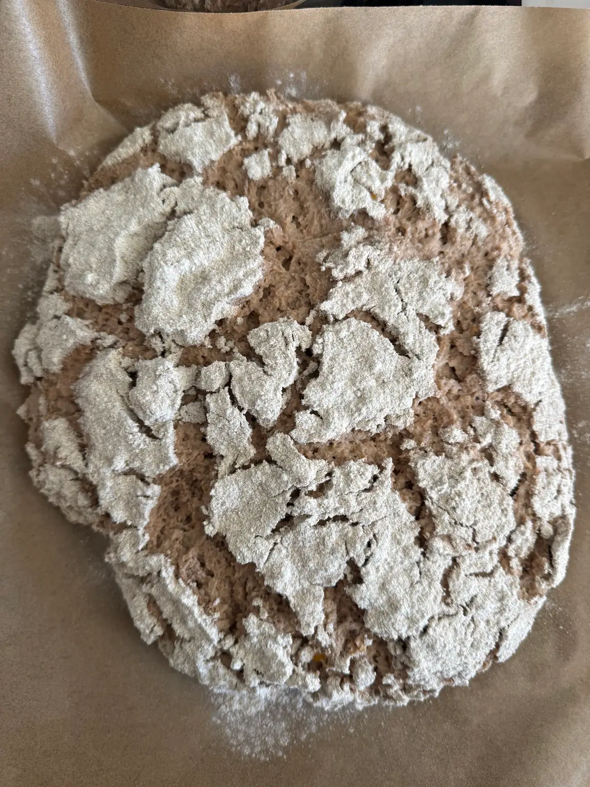

A loaf in four moments
Made by time.

A quiet
beginning.
Fresh dough. A dusting of flour.
The rest takes time.

Something
is happening.
The surface opens.
The dough tells its own story.

Its own
kind of wild.
A pattern you don’t draw.
A loaf you can call your own.
And then,
bread.
Deep crust. Flour-dusted ridges.
This is what you came for.
Four real photographs. From our kitchen.